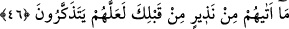
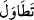
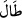
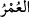
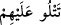
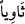
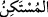
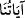

45. Bilakis biz nice nesiller var ettik de, onların üzerinden uzun zamanlar geçti.
Sen, âyetlerimizi kendilerinden okuyarak öğrenmek üzere Medyen halkı arasında
oturmuş da değilsin; aksine (onları sana) gönderen biziz.
“Bilakis biz” senin zamanınla Mûsâ (a.s.)’ın zamanı arasında geçen “nice nesiller”
yâni Musâ’dan sonra bir topluluğun ardından bir başka topluluk “var ettik de, onların
üzerinden uzun zamanlar geçti.”
“ fiili, “ (uzun oldu, uzadı)” mânâsınadır. “; hayat, ömür demektir.
Râğıb İsfahânî der ki: “ (ömür)”; bedenlerin hayatla mâmûr olduğu sürenin genel
bir ismidir. Yani, onların üzerinden uzun bir hayat geçmiş; zaman ve verilen süre
uzamış; şeriât ve ahkâm değişmiş; Peygamberler, onlara ve özellikle son nesillere gizli
kalmıştır. Böylece ahvâl yeni bir şerîatın vaz’ını gerektirdiği için biz de sana bu vahyi
indirmiş olduk.
Burada, önceki âyette kapalı kalan (peygamberimizin vahiyle gaybı haber vermesinin
açıkça zikri) hazfedilmiş, sadece bunun sebepleri (yâni Peygamberimiz’e yeni bir
vahiyle bunun niçin haber verildiği) zikredilmiş ve bununla yetinilmiştir.
“Sen, âyetlerimizi kendilerinden okuyarak öğrenmek üzere Medyen halkı arasında
oturmuş da değilsin;”
Bu âyet, Rasûlûllah (s.a.)’in olaya şâhid olanlardan kıssayı işiterek öğrenmiş olması
ihtimâlini ortadan kaldırır.
“ kelimesi; ikamet etmek, oturmak, yerleşmek anlamlarına gelir. Yani, sen Mûsâ
kelimesi; ikamet etmek, oturmak, yerleşmek anlamlarına gelir. Yani, sen Mûsâ
ve Şuayb (a.s.) gibi Medyen halkı arasında ikamet etmedin ki talebelerin hocalarına
okudukları gibi onlardan öğrenerek âyetlerimizi okuyasın. “ (onlara okursun)”
cümlesi, ya “ deki “ (bir yerde oturan, kalan)”den haldir ya da “ nin
ikinci haberidir. “ (âyetlerimiz)” ifâdesinden maksad da bu kıssayı anlatan
âyetlerdir.
“Aksine (onları sana) gönderen” yâni bu âyetleri ve benzerlerini vahyeden “biziz.”
46. (Mûsâ’ya) seslendiğimiz zaman da, sen Tûr’un yanında değildin. Bilakis,
senden önce kendilerine uyarıcı (peygamber) gelmeyen bir kavmi uyarman için
Rabbinden bir rahmet olarak (orada geçenleri sana bildirdik); ola ki düşünüp öğüt
alırlar.
Biz “(Mûsâ’ya)” “Muhakkak ki ben, yalnızca ben Allah’ım” (Tâhâ, 20/14)
diye“seslendiğimiz” ve peygamberliğini ona haber verip onu Firavun’a gönderdiğimiz